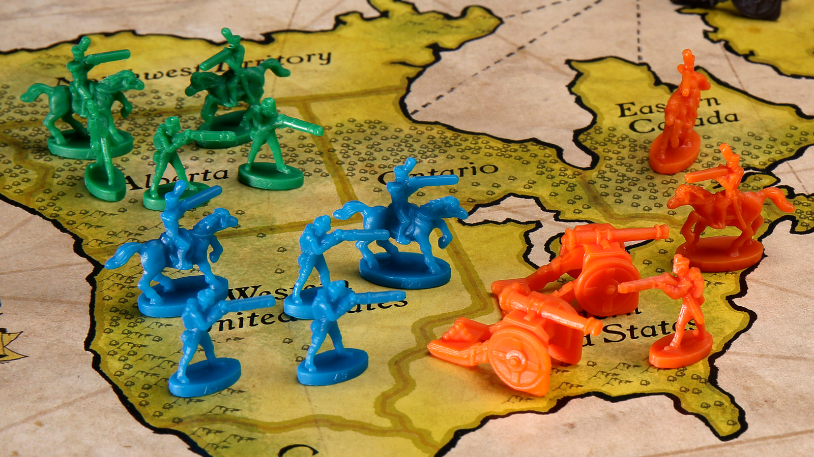

Le Projet
RISK — Adapter le jeu de société en jeu vidéo

Présentation
Notre projet consiste à adapter le célèbre jeu de société RISK en jeu vidéo. RISK est un jeu de stratégie au tour par tour dans lequel les joueurs cherchent à conquérir le monde en déployant des armées et en livrant bataille pour le contrôle des territoires.
Objectifs
L'objectif est de reproduire fidèlement les mécaniques du jeu de plateau tout en proposant une expérience numérique fluide : gestion des territoires, phases d'attaque et de renforcement, et conditions de victoire.
Technologies utilisées
Le projet est développé en Python, en s'appuyant sur nos connaissances acquises en NSI et à l'Université d'Angers. L'interface est construite avec les outils graphiques abordés en cours.